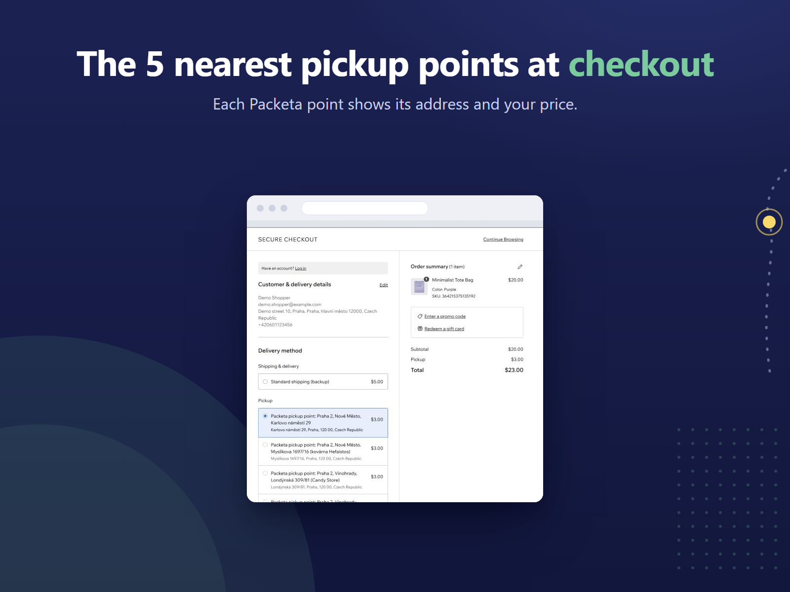
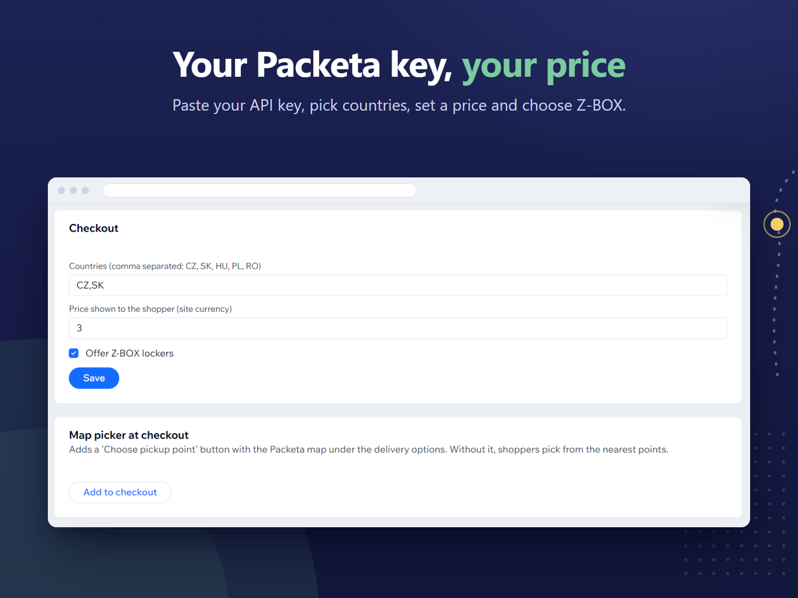

Free Wix App Market app for Wix Stores
Packeta pickup points in your Wix checkout.
Pickup Points for Packeta shows the Packeta pickup points nearest to the shopper's address as delivery options in your Wix Stores checkout, each with its address and your price. Shoppers can also open Packeta's map and choose any point or Z-BOX locker. The chosen point is saved on the order, so you know where each parcel should go.
Pickup
Choose pickup pointOpens Packeta's map
What it looks like
The delivery step in a Wix Stores checkout, and the app's page in your Wix dashboard. The store and shopper are made up; the screens are the real app.
-

CheckoutThe 5 nearest points, each with its address and your price. -

DashboardYour countries, your price, Z-BOX on or off, and the map.
What the app does
Pickup-point delivery from your own Packeta account, chosen at checkout and kept on the order.
- The nearest points at checkout
- When a shopper enters a delivery address, the app asks Packeta for the 5 pickup points nearest to it and lists them under Pickup in the delivery step. Each one shows as "Packeta pickup point:" with its name and address, and the price you set. If you offer Z-BOX lockers, they can be among them.
- Packeta's map, if you want it
- Click "Add to checkout" on the app's dashboard page to put a "Choose pickup point" button under the delivery options. It opens Packeta's own map, where shoppers search for any pickup point in your countries, and any Z-BOX locker if you offer them. The app checks the chosen point with Packeta before saving it, and refuses a point outside the country of the delivery address.
- Saved on the order
- The chosen point's ID, name and address are stored with the cart and carried over to the order. In your Wix orders the delivery shows as pickup at that point's address, so you can see where each parcel should go.
- Your own Packeta account
- The app works with your Packeta contract and your API key, which you find in Packeta's client section at client.packeta.com. Paste the key on the app's dashboard page, choose the destination countries (the Czech Republic, Slovakia, Hungary, Poland and Romania), set one price in your site currency, and decide whether to offer Z-BOX lockers.
- A backup rate
- Wix asks for a backup rate when you turn the app on for a shipping region. If Packeta's list of points can't be reached, shoppers see that rate instead of the pickup points.
- What it leaves to you
- The app does not create Packeta shipments or print labels. You create the parcel in Packeta as you do today, using the pickup point shown on the order.
How it works
Turn it on for a region
Install the app from the Wix App Market. In your Wix dashboard, go to Settings > Shipping & delivery, open a shipping region, turn on Pickup Points for Packeta under Manage apps and set a backup rate.
Add your Packeta key
On the app's dashboard page, paste your Packeta API key, choose your countries, set your price and decide on Z-BOX. Click "Add to checkout" if you also want the map.
Shoppers pick a point
At checkout, shoppers pick one of the nearest points or choose one on Packeta's map. The point and its address are saved on the order.
You need a Wix site with Wix Stores and your own Packeta account. The app is free; what you pay Packeta for shipping stays between you and Packeta.
FAQ
Which countries does it cover?
Packeta pickup points and Z-BOX lockers in the Czech Republic, Slovakia, Hungary, Poland and Romania, and you choose which of them to offer. It has been tested live with a store shipping to the Czech Republic; the other countries use the same Packeta data. Shoppers can only choose a point in the country of their delivery address.
Do I need a Packeta account?
Yes. The app uses your own Packeta account and API key, and your contract and shipping prices with Packeta stay as they are. You find the key in Packeta's client section at client.packeta.com.
What does it cost?
Nothing. The app is free. Packeta charges you for the parcels under your own contract, as before.
Can shoppers choose a Z-BOX?
Yes, if you tick "Offer Z-BOX lockers" on the app's dashboard page. Lockers can then appear among the nearest points and on Packeta's map. Untick it and only pickup points without lockers are offered.
What if Packeta can't be reached?
Shoppers see the backup rate you set for the shipping region in Wix instead of the pickup points, so checkout still offers a way to deliver.
Does it create shipments or labels?
No. It shows pickup points and records the shopper's choice on the order. You create the parcel in Packeta yourself, using the point on the order.
What data does it store, and where?
Your API key and settings, in a collection on your own Wix site that only site admins and the app can read, and the chosen point on the cart and order. The app runs on Wix's app hosting; there is no Creet server. To show Packeta's map, the storefront receives your API key, countries and Z-BOX setting. See the Privacy Policy.
Is this an official Packeta app?
No. Pickup Points for Packeta is an independent app made by Creet. It is not affiliated with or endorsed by Packeta.
Support and legal
Email support@creet.in with your site name or address, the shopper's delivery country and the exact message on screen. Please do not send your Packeta API key or any passwords.
Read the Privacy Policy and the Terms of Use. Pickup Points for Packeta is an independent app by Creet. It is not made or endorsed by Wix, and not affiliated with or endorsed by Packeta.